SteriLe日本速特靈-高效型除菌消臭噴霧
- 日本製預防感染新冠病毒對策
- 高效除菌、快速消臭
- 無酒精成份，安全無刺激
- 除菌力達99.99%
- 有效抑制COVID-19、諾羅病毒、大腸桿菌等
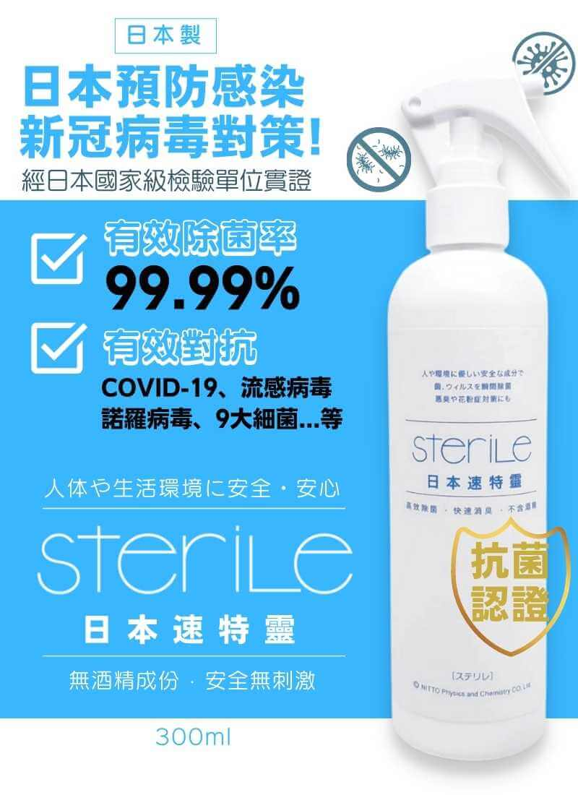
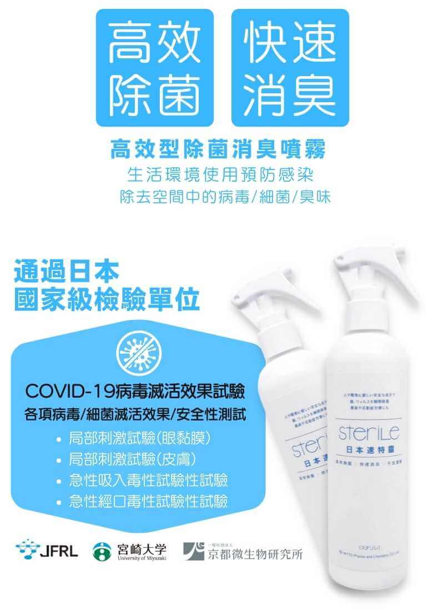
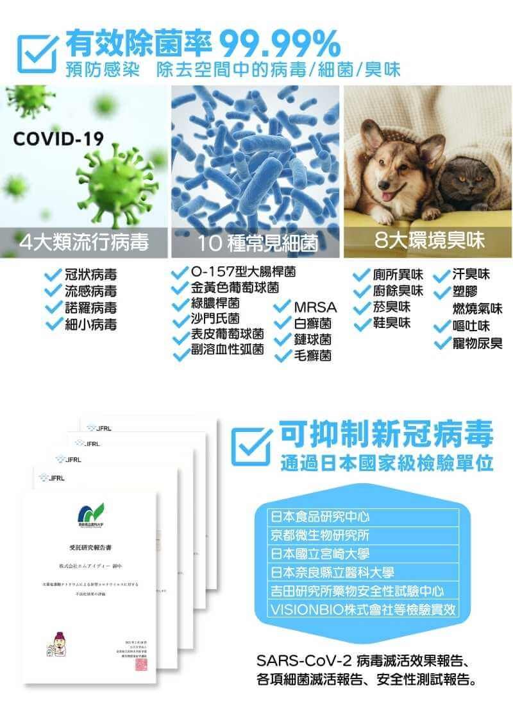
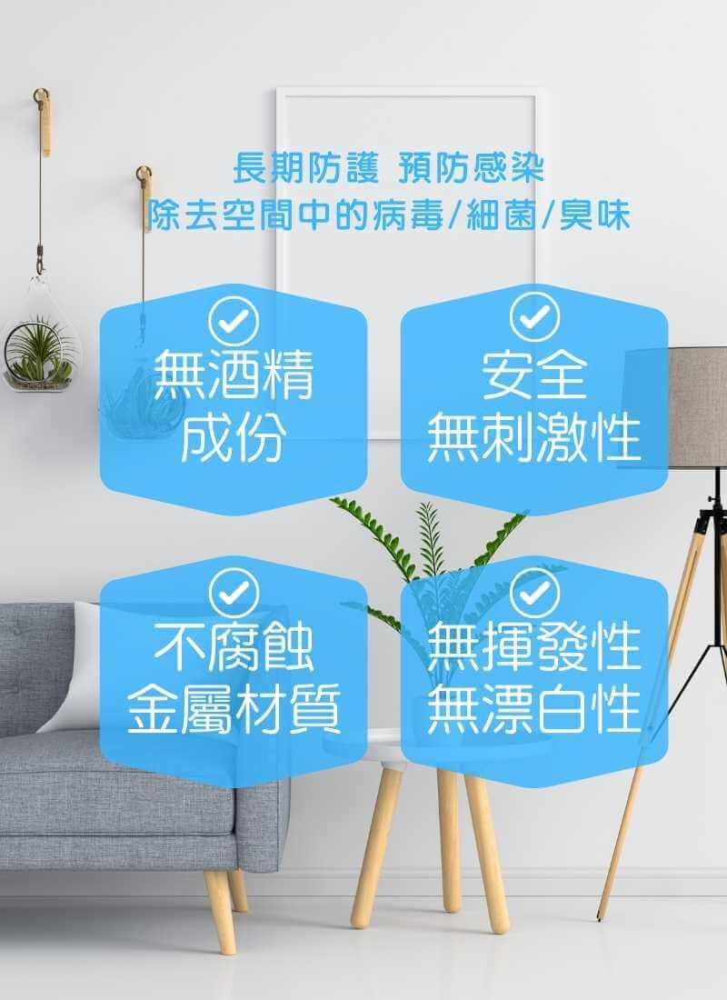
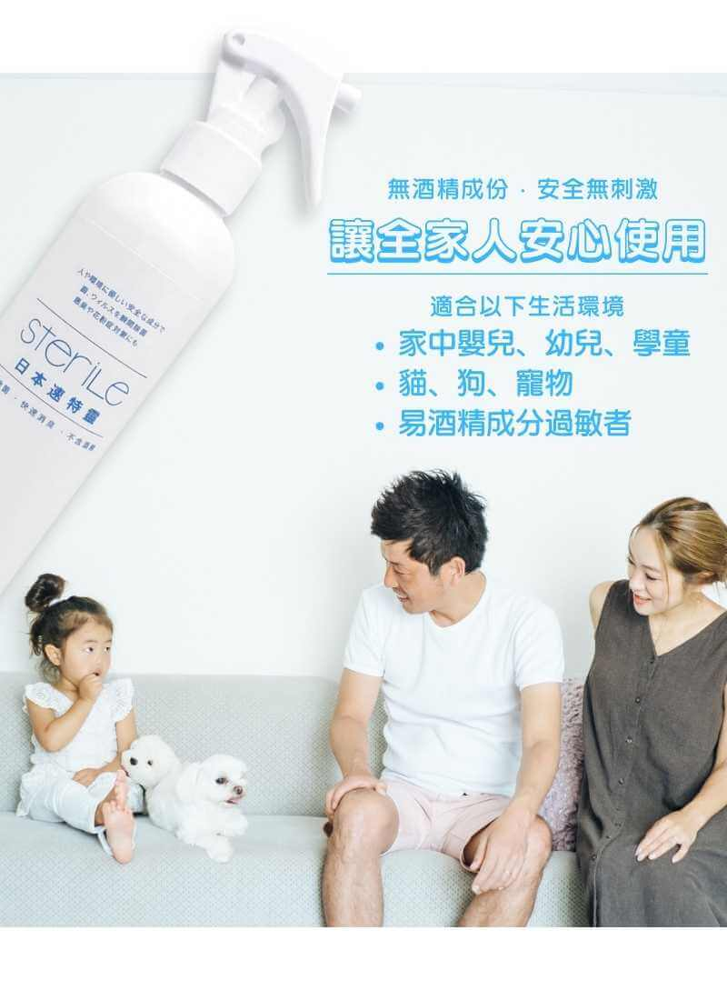
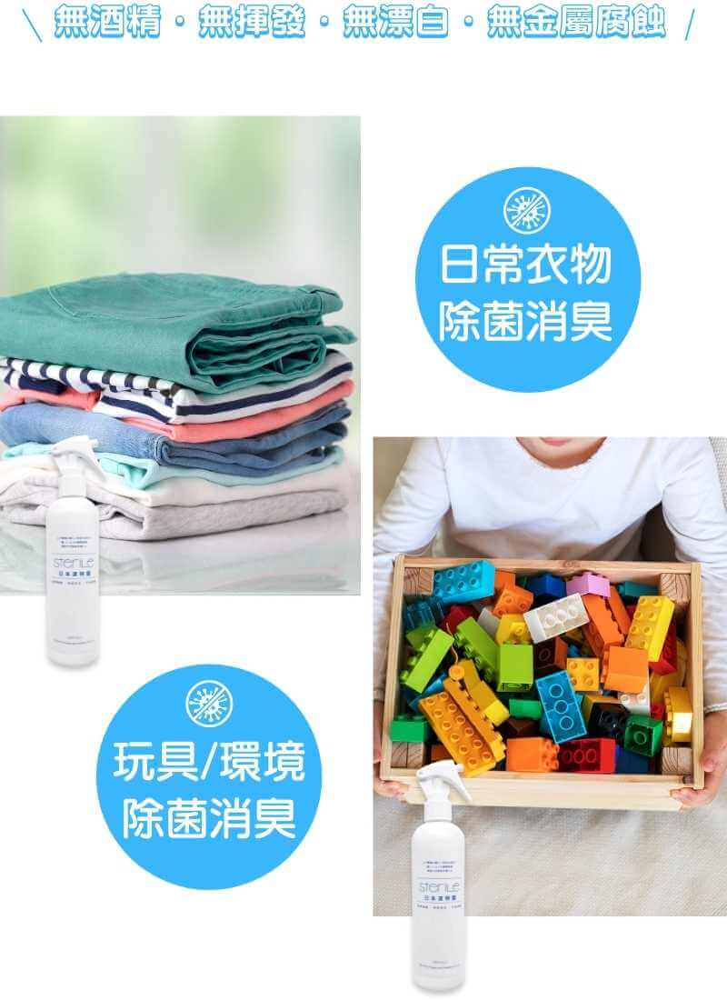
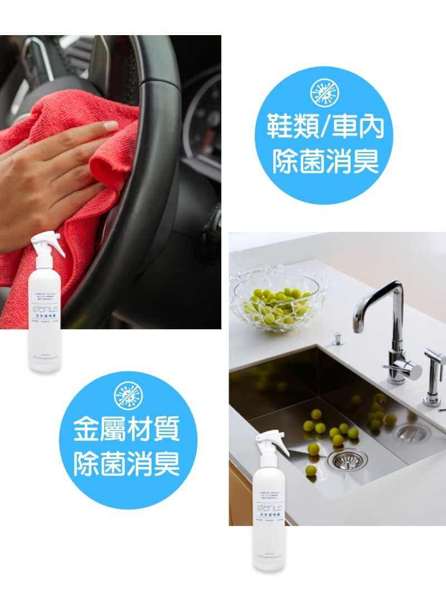
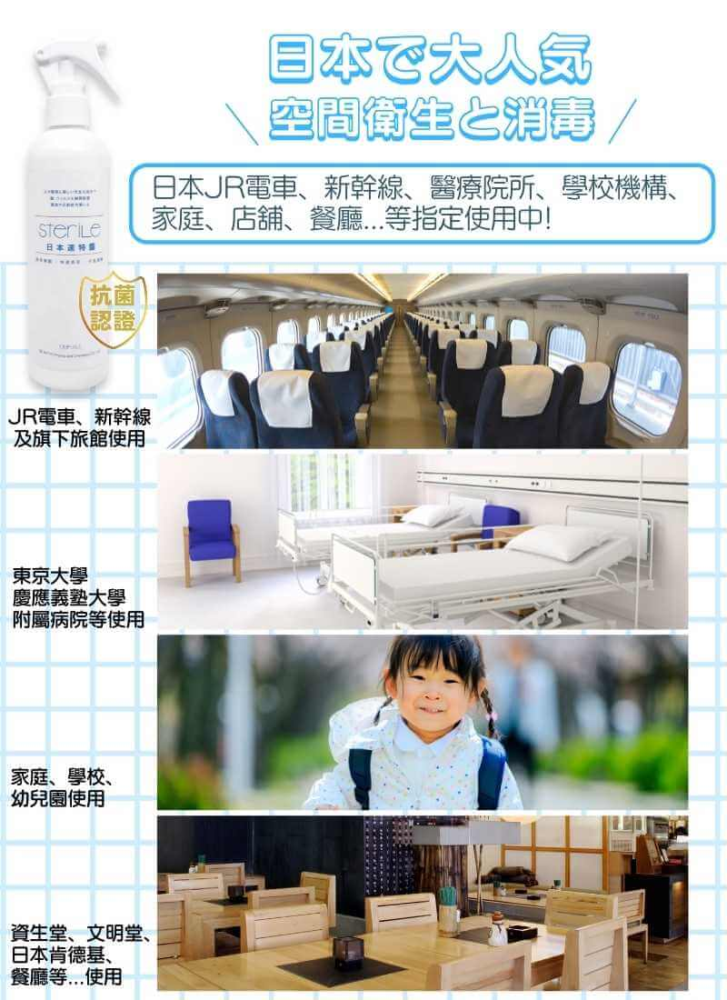
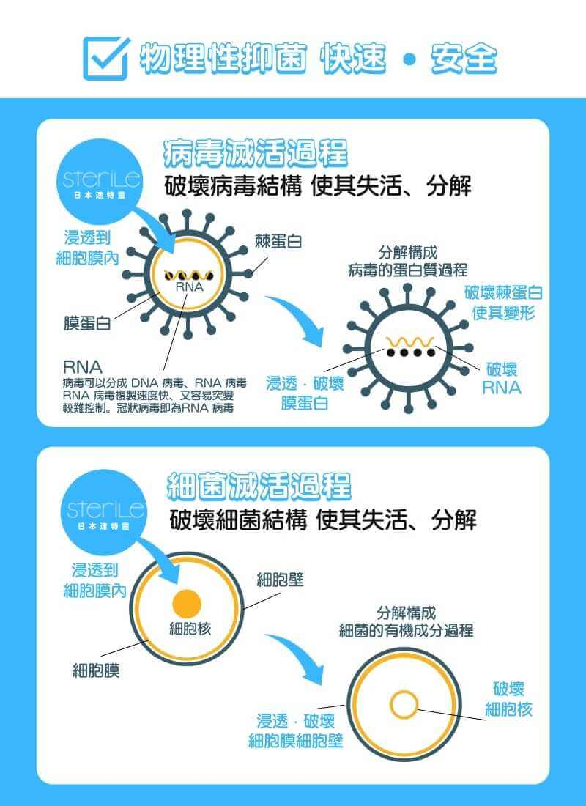
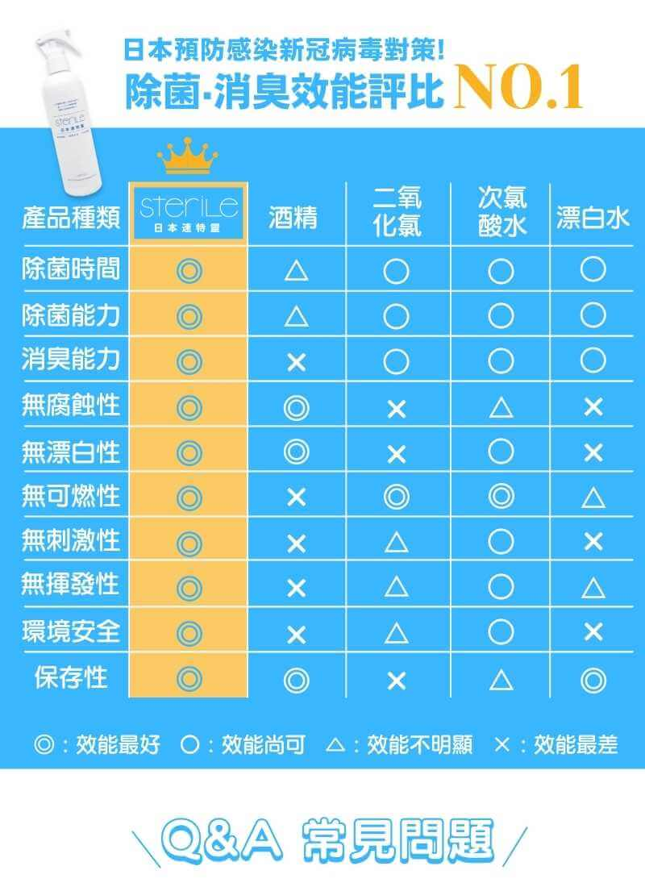
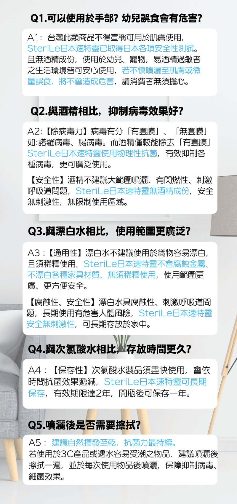
建議售價：320元
聯絡我們
商品描述
經日本國家級檢驗單位實證，有效抑制SARS-CoV-2（導致COVID-19的病毒），長期防護、預防感染、除去空間中的病毒/細菌/臭味，全家人都可安心使用。
【商品特性】
高效除菌、快速消臭、無酒精成份、安全無刺激性、不腐蝕金屬材質、無揮發性、無漂白性、物理性抑菌快速安全，有效破壞病毒/細菌結構 使其失活、分解，可長期存放。
【適用環境】
家中有嬰、幼兒、學童、長者、貓狗、寵物、易酒精成份過敏者。
【應用實例】
日本JR電車、新幹線、醫療院所、學校機構、家庭、店舖、餐廳...等指定使用。
【檢驗單位】
日本食品研究中心、京都微生物研究所、國立宮崎大學、奈良縣立醫科大學、吉田研究所藥物安全性試驗中心、VISIONBIO株式會社等檢驗實效
【使用注意】
環境淨化使用，不可飲用。
SteriLe日本速特靈已取得日本各項安全性測試，若不慎噴灑至肌膚或微量誤食，將不會造成危害，請消費者無須擔心。若使用於3C產品或遇水容易受潮之物品，建議噴灑後擦拭一遍，並於每次使用物品後噴灑，保障抑制病毒、細菌效果。
商品內容
- SteriLe日本速特靈1入
商品規格
| 品名 | SteriLe日本速特靈 高效型除菌消臭噴霧 |
| 用途 | 環境除菌、消臭、去油汙、居家防疫、淨化、去除寵物尿臭、餐廳廚房臭味、鞋臭、汗臭異味等 |
| 成份 | 安定型次氯酸鈉水、超純水 |
| 劑型 | 噴霧 |
| 容量 | 300ml |
| 品牌國家 | 日本 |
| 原產地 | 日本 |
| 進口商 | TOYO |
| 有效日期 | 2年，開瓶後可保存1年 |